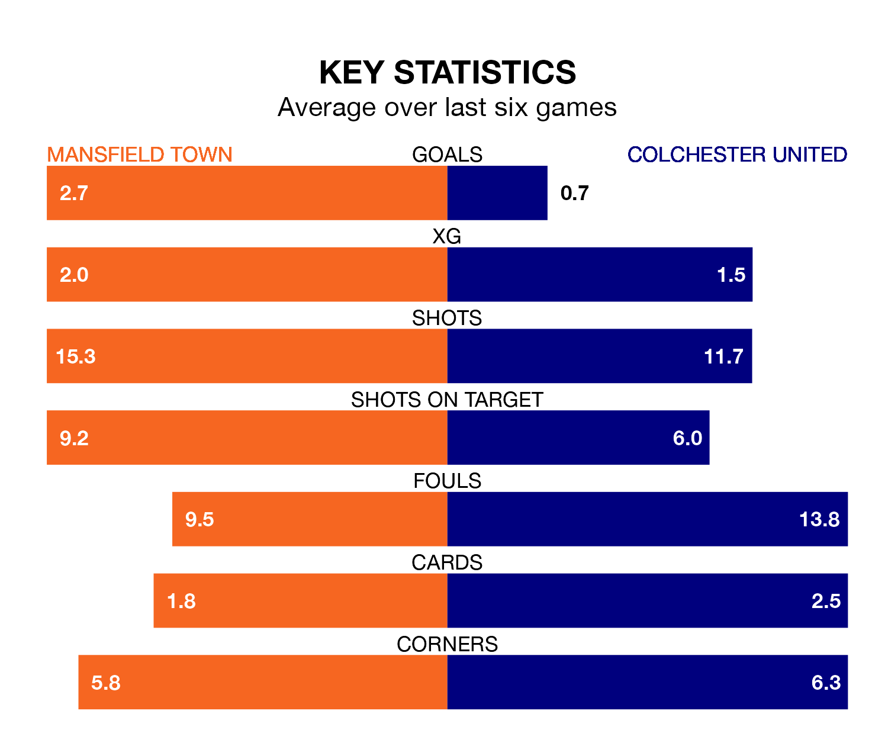

Relegation candidates Colchester United face a challenge away against high-flying Mansfield Town at the One Call Stadium on Saturday.
Colchester United are 22nd in the EFL League Two table, and have picked up eight wins and nine draws in their 36 games to date.
The Stags, meanwhile, are top of the standings with 72 points, having won 20 and drawn 12 of their first 38 matches.
With 78 goals in 38 games so far this season, Mansfield are the league's highest scorers with 2.1 goals per game. And they are conceding fewer than average, letting in 36 goals at a rate of 0.9 per game.
Colchester, meanwhile, are below average scorers, with 1.3 goals per game, compared to a league average of 1.5. They have conceded 1.8 goals per game.
In Christy Pym, Town can rely on one of the league's safest pair of hands. He has kept 13 clean sheets in his 38 appearances this season, and only one other 'keeper – AFC Wimbledon's Alex Bass – has been able to prevent the opposition scoring on more occasions in EFL League Two.
In United's net, Owen Goodman has four clean sheets in 33 games. He has conceded a goal every 66 minutes, 50% more often than the 101 minutes between goals for Pym.
In the last 10 years, Mansfield and Colchester have played each other on 14 occasions. Mansfield won four of them, Colchester three, and they drew seven times.
On average, the Stags scored 1.3 goals and the U's 1.3 in those matches.
Their last meeting was on September 16, when they played out a 1-1 draw.
The Stags are in reasonable form in EFL League Two, with four wins and two losses from their last six games.
With no wins and four draws over that period, the U's' form is much worse – they have taken four points from 18, compared to the hosts' 12.
Mansfield's last match was on Saturday, a 5-1 win against Bradford City, with Aaron Lewis, Baily Cargill, Davis Keillor-Dunn, Lukas Akins and Will Swan getting the goals for the Stags.
Colchester drew 1-1 with Walsall last time out, also on Saturday, with Cameron McGeehan on the scoresheet.
Saturday's match will be refereed by Simon Mather, who has taken charge of 10 EFL League Two games so far this season, issuing two red cards and booking 49 players. He has awarded three penalties.
He is yet to oversee a match featuring either Mansfield or Colchester this season.
Updated: 10:19 (UTC), 22/03/24